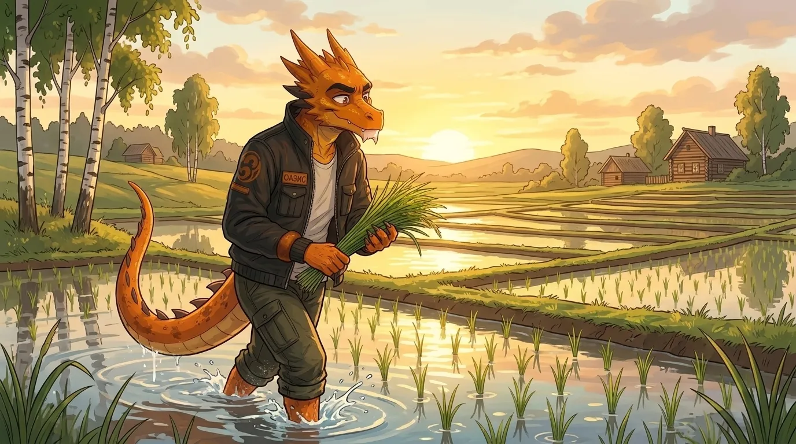
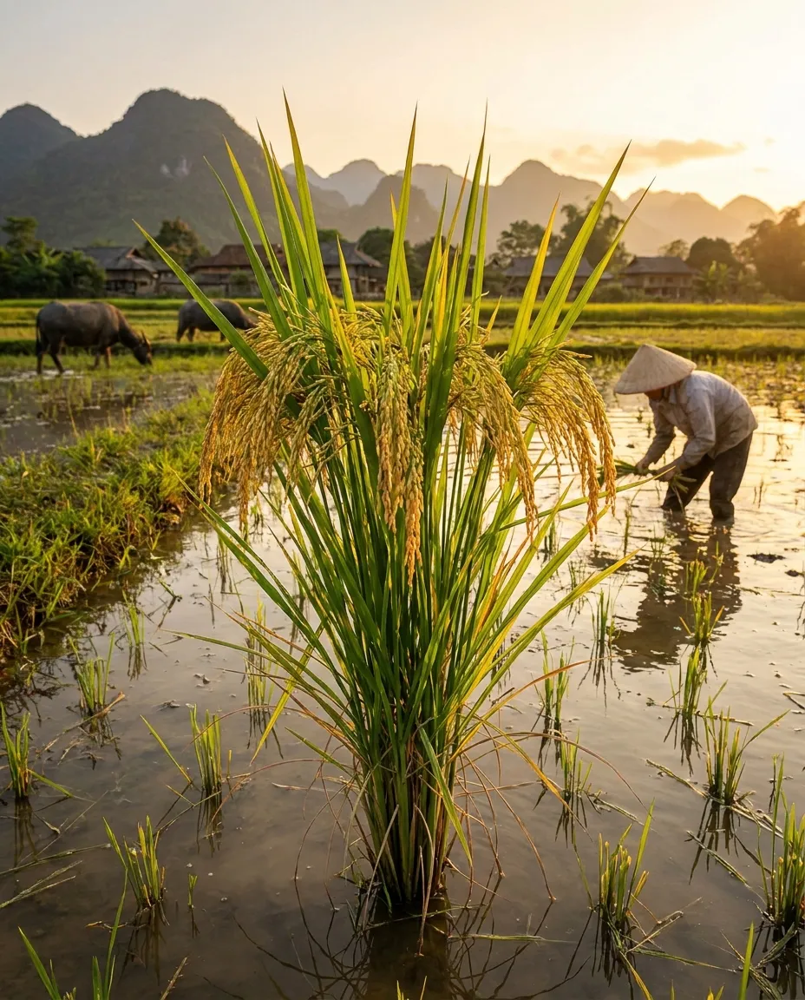
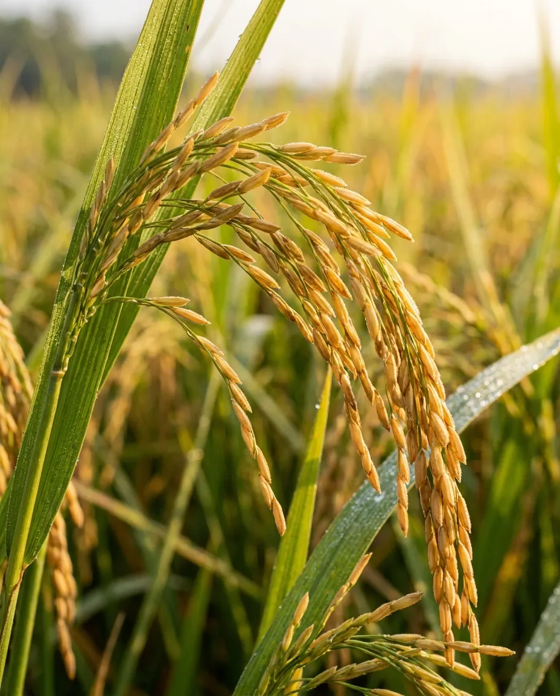

РИС
Рис — однолетнее растение семейства Злаки. Большинство культурных сортов риса требовательны к условиям выращивания: посевы могут быть повреждены или погублены заморозками. Рис влаголюбив, и его побеги растут прямо из воды.
В то же время в последние десятилетия ведётся работа по созданию растений с новой архитектоникой, пригодных для различных условий выращивания. Доля суходольного риса в мире составляет до 15 % посевных площадей, что даёт основания полагать: возможно получить формы, пригодные для выращивания в центральной полосе России на богаре.
Это позволит расширить биоразнообразие агроценозов альтернативной яровой злаковой культурой. Селекционная программа ориентирована на получение адаптивных форм, устойчивых к дефициту влаги и подходящих для современных технологий выращивания и уборки.

Направления селекции
- Устойчивость к засухе и дефициту влаги
- Скороспелость
- Приспособленность к глубокой заделке семян
- Высокая энергия прорастания при низких температурах
- Высокие темпы стартового роста и хорошее кущение
- Устойчивость к болезням и вредителям
- Технологичность уборки
